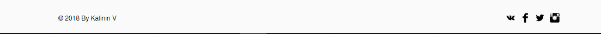

1) Выбери любого исполнителя из списка имеющегося на сайте. Список состоит из типографий, издательств и компаний занимающихся графическим дизайном. Каждая организация, в списке, имеет информацию о перечне выполняемых услуг и необходимую контактную информацию. Выбрав из списка нужного исполнителя напиши ему. Заказ быстро поступит в обработку и исполнитель свяжется с вами.
2) Создай заказ, выбрав одно или несколько направлений из перечня выполняемых услуг. Опиши важные моменты в производстве твоего заказа ( Необходимые параметры ). Опубликуй данный заказ и ты получишь заявки от множества компаний в области полиграфии. Далее выбирай исполнителя и исполнитель свяжется с вами.
